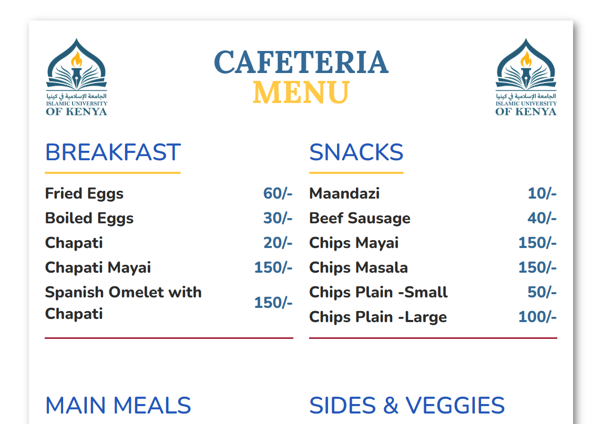

Hey I am Ali Hassan
a web designer & software developer
Projects

Cafeteria Digital Menu
A responsive restaurant menu built with HTML & CSS. It features categorized sections, a sticky navbar, and a warm color scheme.